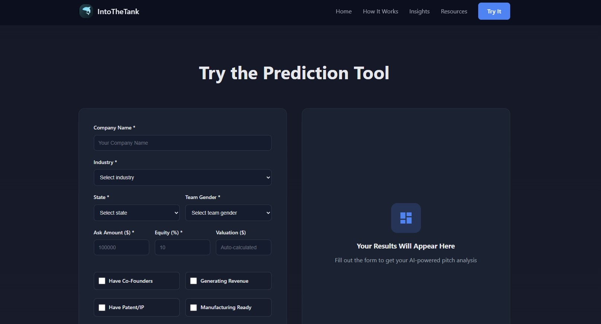
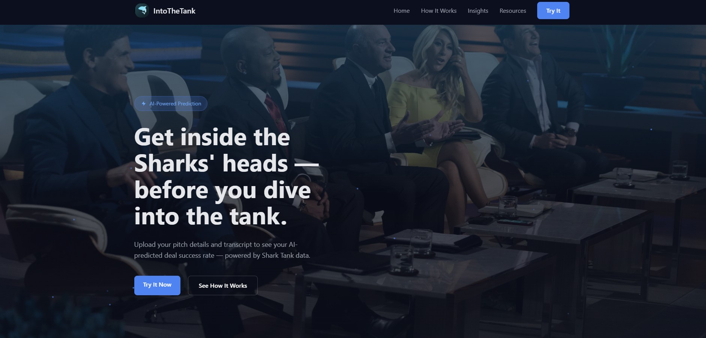

Web / Data
IntoTheTank.
A better pitch starts here.
IntoTheTank is a web concept inspired by Shark Tank that analyzes the strength of a pitch and predicts how well it might perform. It takes into account factors like gender, age, specific sharks, and industry.
SECTION 01 / 03
Turning pitch data into an accessible experience
IntoTheTank is a web concept inspired by Shark Tank. It explores how information about a business and its pitch could be organized into a tool for examining possible outcomes.

SECTION 02 / 03
From business details to an analysis
The interface collects information such as industry, location, team composition, investment ask, and equity. Grouping the inputs beside a results panel makes the proposed input-to-analysis journey visible.

SECTION 03 / 03
Making a complex idea approachable
The project combines code, interface design, and data exploration. The original portfolio identifies my contributions as backend PHP, some database design, and data visualization. A useful next step would be to explain the model’s limits and evaluate its outputs before treating predictions as reliable advice.
